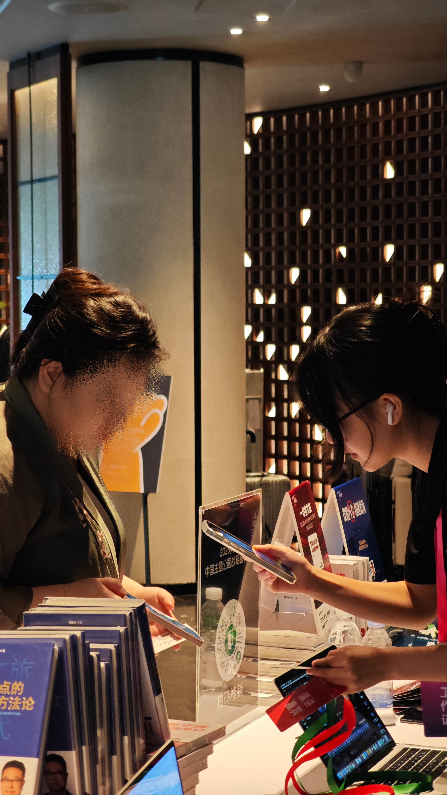

接洽与摸底
确认参会意向、角色、分享主题与关键需求，先听懂对方真正关心什么。
 04
04
把几百人
的现场
稳稳接住。
LIAISON / 商务对接
我理解的商务对接，不是把资料转发出去，而是对每个承诺负责：对方是否收到、是否理解、是否能按时到场，以及临时变化发生时，谁能在第一时间接住。
确认参会意向、角色、分享主题与关键需求，先听懂对方真正关心什么。
逐项核对到达时间、入住、用餐、用车和现场安排，所有变更写进共享表。
把日程、动线、签到、座位、发言节点与联系人整理成一页能看懂的指引。
签到、落座、催场、上台、采访与合影环环衔接，准备临时调整的替代路径。
完成感谢、素材回传、反馈记录与复盘，把一次接待沉淀为长期关系。

签到与答疑：快速识别需求，把问题交接到正确的人。

核对信息、指引动线，处理临时需求。
与嘉宾和同事同步节点，确保下一步清晰。
DELIVERABLES / 工作交付
嘉宾指引手册负责“让对方安心”，共享协作表负责“让团队同步”，主持与颁奖台本负责“让现场不断线”。三类文件共同降低信息差，而不是各自孤立存在。
公开版仅保留字段结构。真实姓名、机构、电话、微信与二维码均不展示。
“台本不是台词堆叠，
而是现场状态的切换器。”
欢迎语 → 安全提示 → 议程总览
上一位收束 → 下一位介绍 → 掌声引导
嘉宾站位 → 物料确认 → 倒数与合影
延迟、空场与临时调整的替代话术
WHAT I BRING / 岗位匹配
从模糊表达里拆出目标、决策人、时间与风险点，再用书面确认减少理解偏差。
同时推进多方节点，知道什么时候该提醒、该升级、该给备选方案。
面对临时变化快速判断影响范围，先保住关键流程，再补齐后续交接。
能把活动事实转成品牌可用的内容与复盘材料，让一次合作留下持续价值。
本模块只展示我的工作方法、交付结构与现场执行过程。所有嘉宾姓名、单位、电话、微信、二维码、证件、桌牌和可识别的资料文字均已移除或做二次遮挡；公开 PDF 为重新制作的脱敏样例，不包含原始手册。
峰会不是一天的活动，而是几十位嘉宾、几百个细节、无数条信息的协同。
第三届中国主题公园战略营销峰会聚集了 300+ 位行业高管。嘉宾对接、现场动线、采访安排与传播物料，任何一个环节出问题，都会影响整场活动的专业度。
独立接洽数十位文旅专家与嘉宾，负责商务对接、行程确认与采访提纲撰写；维护嘉宾状态与变更信息，用共享协作表同步会务、媒体与现场负责人；结合主持稿与颁奖流程协同台本、催场和现场衔接。
同时参与现场会务与嘉宾服务，主导现场采访，并完成回顾视频的剪辑输出。峰会之外，也把现场的长内容拆成适合视频号分发的短内容。
商务对接的核心不是社交热度，而是可信赖的推进能力。大型活动的专业度往往体现在「没有发生的事」：没有错过的行程、没有失真的信息、没有断掉的流程，也没有临时找不到的材料。这段经历让我建立了更稳的沟通节奏、交付意识和现场判断。